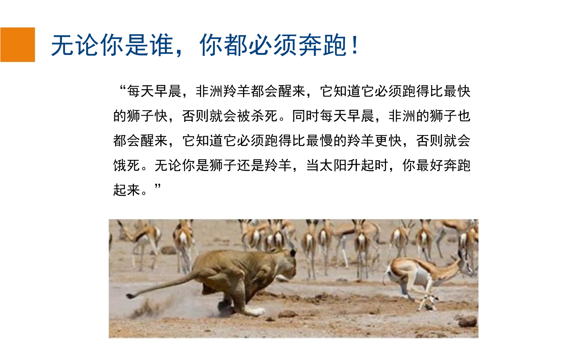

研究理念:
我的研究聚焦于数据驱动应用中的基础数据管理原理与系统构建。秉持“所有算法与结构都应简洁、优雅且高效”的理念，我的研究工作为“DB x X”相关系统的设计与实现奠定了基础，使系统不仅高效、稳健，而且具备可扩展性与安全性。我采用研究方法是从系统整体考虑的，如通过识别和利用应用特性去构建创新的端到端数据库系统。
在过去40年的数据管理发展历程中，我的研究成果在各个时代均产生了深远影响。在前云计算、前大数据时代，我在存储、索引和P2P方面的工作，雕琢了多媒体和地理空间应用的进化方向。如今，这些成果在向量数据库和AI驱动的应用中依然具有重要影响。在大数据时代，我提出并实现了支持数据处理全过程的端到端系统，包括数据清洗、人机协作的数据整理（众包）到大数据处理等，打造了高效、稳健、可扩展且安全的新型分布式系统，这些系统已成功应用于医疗、金融等实际行业。在机器学习时代，我是最早提出人工智能与数据库应协同发展的研究人员之一，并领导推出了全球首个分布式深度学习系统Apache项目。
如今，我正在实现一个愿景：打造人工智能的最佳特性与传统数据库的优势相结合的新型系统。
另请参阅2011年 《SIGMOD Record》 的专访。
研究影响与成果转化
基础数据库原理
Data Blade/Cartridge：
在早期，数据库系统主要是关系型的，尚未设计用于支持诸如空间对象、多元关系等新型数据类型。与其从头构建一个数据库系统，我选择在已有系统之上开发一个子系统。我在读博期间提出了GEOQL，将其作为一个GIS/数据库插件集成到现有系统中，解决了如SQL扩展以支持空间关系、索引（skd-tree）、空间融合的查询优化及相关系统设计等问题。该成果以Springer LNCS专著出版（《Lecture Notes in Computer Science》#471）。
Indexing：
基于B+-树的索引：尽管已有文献提出了许多索引方法，但很少有被真正应用于数据库内核。这是因为引入新索引会影响并发控制、连接方法和查询处理策略等，因而需重新设计。因此，我让现有的B+-树能够高效地支持新型数据，使其能够直接集成到数据库中。
对于高维索引面临维度灾难的问题，我发现有时直接扫描整个数据库比使用索引还要高效。且高维索引对于模式识别和机器学习应用至关重要。2001年，我提出了iDistance（参见iDistance wiki），一种基于距离的简单、优雅且高效的B+树高维索引方法。这一方法拥有公开代码库，并被广泛扩展和应用，包括在后续的学习型索引（learned indexes）中。
2000年代早期，数据管理的新兴应用包括监控和查询大量连续变量，比如移动服务用户的位置数据（即移动对象），在这类应用中，大量通过传感器采集的状态样本流式传入数据库。移动对象索引不仅需支持高效查询，还需支持频繁更新。传统基于最小包围矩形（MBR）的索引（如R树）在节点分裂时的并发开销大，每次更新成本高。
2004年，我们提出了Bx-tree（参见Bx-tree wiki），使B+-树可以管理移动对象。我们将移动对象的位置表示为带有更新时间戳的向量，通过一种创新的线性化技术，使得单一的B+-树可以索引这些值，并依据时间戳进行分区，保持空间邻近性。这一方法通过引入时间滚动以索引的高效性，并在查询处理时根据速度感知动态扩展查询范围以快速检索。更重要的是，这种索引可以低成本地集成到现有数据库系统中。
以上工作正符合我一直坚持的研发理念：所有算法与结构应简洁、优雅且高效，便于实际应用中的实现、维护与扩展，所有系统也必须高效、可扩展、易用。
Filter and Refine：
高效检索数据通常代价高昂，许多算法和索引结构都基于“过滤+精炼”原则设计。在过滤阶段，快速排除不相关或不太可能的候选数据；在精炼阶段，执行计算密集型的比较和校验以获得最终答案。为了提升效率与可扩展性，我的算法与系统（包括最新的数据库原生AI增强分析处理）均基于这一原则进行设计。
系统（Systems）
GEOQL：
一款地理信息系统（GIS），作为我博士论文的一部分开发完成。详见上文。
VIPER：
一个基于视觉属性的图像检索引擎。我于1999年基于此衍生出GeoFoto，这是早期的社交网络照片分享系统之一。我们与富士胶片（FujiFilm）合作，推出了全球首个线上到线下（O2O）照片打印服务，使用户账户中的照片可以直接发送至指定门店的打印机进行打印。
BestPeer：
一套自配置的P2P系统，涵盖了结构化和非结构化版本。在非结构化版本中，我们设计了PeerDB，这是一个完整的分布式P2P数据共享系统，具备自配置的节点网络。在结构化版本中，我们设计了BATON（BATON维基链接），一种新颖的平衡树结构覆盖网络，支持精确查询和范围查询。基于此项工作，我于2007年创办了BestPeer公司。
epiC：
一个弹性、节能、数据密集型云平台。目标是设计并实现一个高吞吐、低延迟交易支持和高性能可靠查询处理，且具备在线分析能力的高效多租户云系统。2009年，在对MapReduce可扩展性局限进行深入分析后，我们基于Actor模型启动了此系统的开发。
FabricSharp：
Hyperledger Fabric 2.2的一个变体版本。FabricSharp相较于原版，支持细粒度安全数据溯源、分片（Sharding）、可信硬件（如SGX）的应用，并引入了区块链原生存储引擎ForkBase，以提升系统性能。
GlassDB：
一个安全、高效、可扩展的安全数据系统，用于支持大数据和Web3应用，具有数据可验证和可审计功能。
Falcon：
Falcon是一个隐私保护、高效且具激励感知的联邦学习平台，支持安全的跨孤岛数据协作。平台实现了一系列基于隐私计算技术（如部分同态加密和安全多方计算）的机器学习算法，并提供高效的零知识证明（ZKP）机制，以确保输入数据的隐私性和完整性。
HAKES：
一款高效的向量数据库系统，采用分离式系统架构，支持快速检索，可轻松集成至RAG（Retrieval-Augmented Generation）系统中使用。
NeurDB：
NeurDB是一个由AI驱动的数据系统，具备自治/自驱动特性，集成了数据库内分析、学习型并发控制与索引。
基准测试（Benchmarking）：
新型应用、工作流、负载和数据，需要新设计的基准测试工具。我们开发了：
- BlockBench：区块链系统基准测试
- VeriBench：可验证数据库系统基准测试
- NeurBench：AI驱动数据系统基准测试
- 医疗AI领域的基准测试（见下文）
数据为中心的人工智能（Data-Centric AI）
Apache SINGA
Apache SINGA 是 Apache 顶级开源项目，专注于深度学习和机器学习模型的分布式训练。
2012年，AlexNet 在 ImageNet 上展示了深度学习的强大能力。基于我们对神经网络复兴、大量数据（尤其是标注数据）可用性，以及硬件进步的观察，我们于2014年开始开发 Apache SINGA，重点在于性能、可扩展性和易用性。它的第一个开源版本于2015年10月发布，比 Google 的 TensorFlow 和微软的 CNTK 略早。Apache SINGA 也因此荣获了2024年 ACM SIGMOD 系统奖。以下是这段故事的相关资料。
Apache SINGA Wiki:

相关新闻:
医疗健康（Healthcare）
GEMINI：
一个端到端的AI驱动医疗健康分析系统。该系统支持通过AI模型与众包模块进行数据清洗、大数据处理，以及深度学习模型的训练与推理。
Foodlg：
Foodlg是一个高效、易用、智能的食物日志记录、营养追踪与自动分析平台。
COOL：
一个高效的族群分析与建模系统。我们设计了CohortNet等模型，支持可解释的医疗健康分析中的族群发现，旨在促进疾病因果关系发现与治疗研究。
HealthGPT：
一个医学大规模视觉语言模型，通过异构知识适配统一理解和生成任务。
EyeCareGPT：
一款专为高效且细粒度眼科视觉理解设计的大规模视觉语言模型架构。它采用自适应分辨率机制与层次密集连接器，结合定制数据集、基准和模型，大幅提升了眼科领域的综合理解能力。
相关新闻：